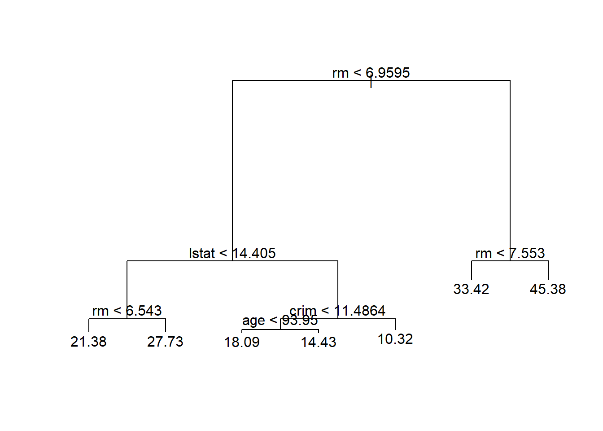
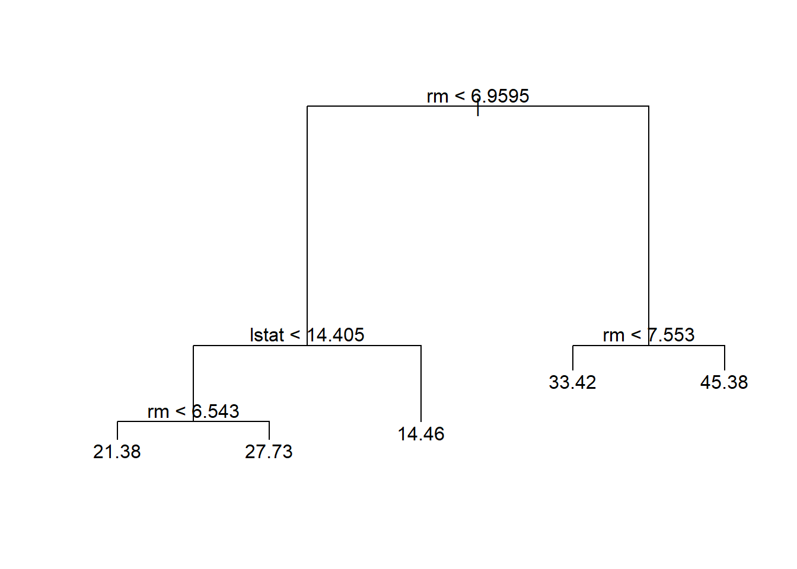
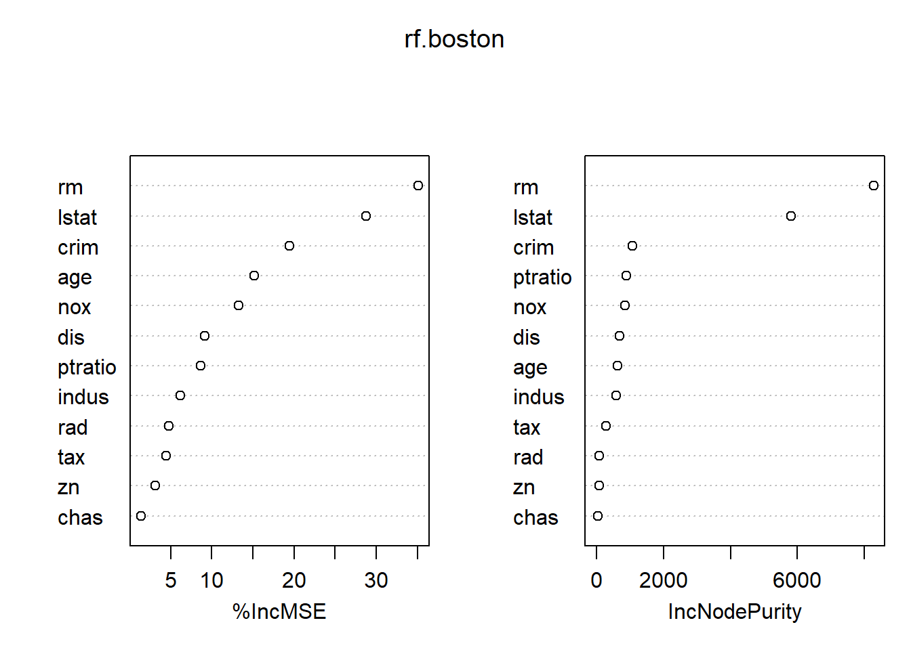
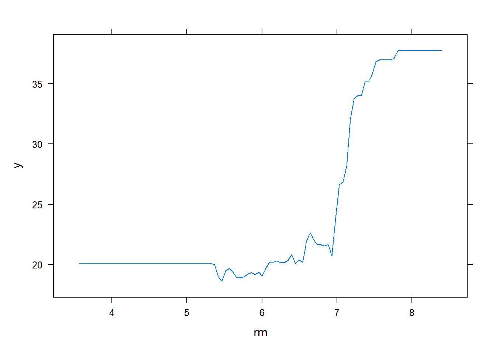
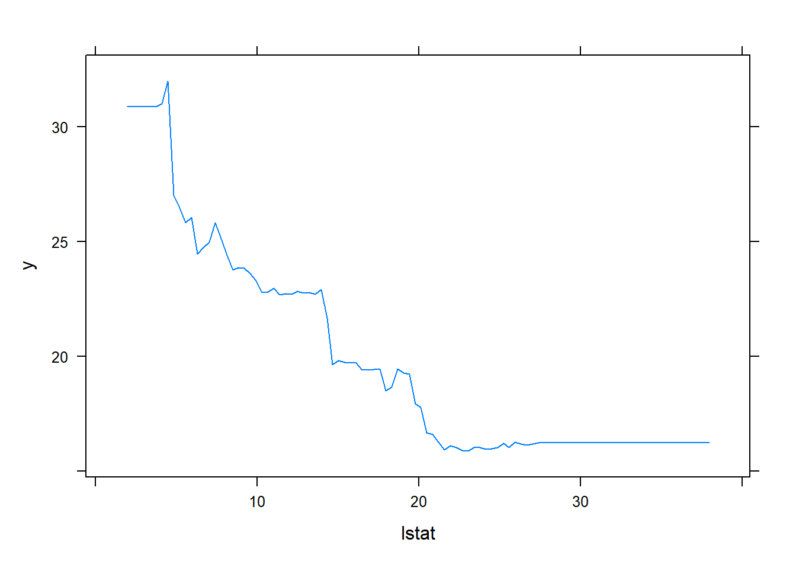

Capítulo 7 Arboles de decision
Los métodos basados en árboles para regresión y clasificación estratifican o segmentan el espacio predictor en varias regiones. Para hacer una predicción para una observación dada normalmente utiliza el valor de respuesta promedio de las observaciones de la base de entrenamiento en la región a la que pertenece. En el caso de clasificación se asigna a la categoría mayoritaria dentro del nodo terminal.
Classification and Regression Tree
En el caso de árboles de regresión, si \(Y\) es la respuesta y \(X_1\) y \(X_2\) los inputs se parte el espacio \((X_1, X_2)\) en dos regiones, en base a una sola variable (partición horizontal o vertical). Dentro de cada región proponemos como predicción la media muestral de \(Y\) en cada región.
Se busca elegir la variable y el punto de partición de manera óptima (mejor ajuste global). Es computacionalmente inviable considerar cada posible partición del espacio de atributos en \(J\) regiones. Por lo tanto, toma un enfoque top-down, greedy que se conoce como división binaria recursiva. El enfoque es top-down porque comienza en la parte superior del árbol (en cuyo punto todas las observaciones pertenecen a una sola región) y luego divide sucesivamente el espacio predictor; cada división se indica a través de dos nuevas ramas más abajo en el árbol. Es greedy porque en cada paso del proceso de construcción del árbol, la mejor división se hace en ese paso en particular, en lugar de mirar hacia adelante y elegir una división que conducirá a un mejor árbol en algún paso futuro.
El panel izquierdo de la Figura 7.1 muestra un árbol de regresión para predecir el logaritmo del salario (en miles de dólares) de un jugador de béisbol, basado en la cantidad de años que ha jugado en las ligas mayores y la cantidad de hits que hizo en el año anterior. En un un nodo interno dado, la etiqueta (de la forma \(X_j < t_k\)) indica la rama izquierda que sale de esa división, y la rama de la derecha corresponde a \(X_j \ge t_k\). Por ejemplo, la división en la parte superior del árbol da como resultado dos ramas grandes. El la rama izquierda corresponde a Years < 4,5, y la rama derecha corresponde a Years >= 4,5.13 El árbol tiene dos nodos internos y tres nodos terminales u hojas. El número en cada hoja es la media de la variable de respuesta de las observaciones que caen allí. Por ejemplo, la predicción para el nodo terminal de la izquierda es \(e^{5,107} \times 1.000 = \$165.174\). El panel derecho la Figura 7.1 muestra las regiones en función de Years y Hits.

Figura 7.1: Arbol de regresión
Notar:
Cada región tiene su propio modelo.
Ciertas variables importan en determinadas regiones y no en otras (Hits).
Dado \(Y\) y \(X\) un vector de \(p\) variables de \(n\) observaciones. El algoritmo busca determinar cuál variable usar para la partición y que punto de esa variable usar para la partición. Si \(j\) es la variable de partición y el punto de partición es \(s\), se definen los siguientes semiplanos:
\[\begin{align*} R_1(j,s) = & {X \mid X_j < s} \\ R_2(j,s) = & {X \mid X_j \ge s} \end{align*}\]
Se trata de buscar la variable de partición \(X_j\) y el punto de partición \(s\) que resuelvan (minimizar el \(MSE\) en cada región):
\[\begin{equation} \tag{7.1} \sum_{i: x_i \in R_1(j,s)} (y_i - \hat{y}_{R_1})^2 + \sum_{i: x_i \in R_2(j,s)} (y_i - \hat{y}_{R_2})^2 \end{equation}\]
Donde \(\hat{y}_{R_1}\) y \(\hat{y}_{R_2}\) es el promedio de la respuesta en las regiones \(1\) y \(2\), respectivamente. Para cada variable de partición y punto de partición, la minimización interna se corresponde con la media dentro de cada región.
¿Cuándo parar de realizar divisiones?
Un árbol demasiado extenso sobreajusta (overfit) los datos. Pero dado que el proceso es secuencial y cada corte no mira lo que puede suceder después, si detengo el proceso demasiado pronto puedo perder un “gran” corte más abajo. Prunning: ajustar un árbol grande y luego podarlo (prune) usando un criterio de cost-complexity.
Weakest link pruning
Un subárbol \(T \in T_0\) es un árbol que se obtiene colapsando los nodos terminales de otro árbol (cortando ramas).
Cost-complexity del árbol \(T\):
\[\begin{equation} \tag{7.2} C_{\alpha}(T) = \sum_{m=1}^{|T|} n_mQ_m(T) + \alpha[T] \end{equation}\]
con \(Q_m(T) = \frac{1}{n_m} \sum_{x_i \in R_m} (y_i - \hat{c}_m)^2\) (impureza) y \(n_m\) cantidad de observaciones en cada partición. Entonces, el primer término mide el (mal) ajuste y el segundo la complejidad. Cuando \(\alpha = 0\), entonces el subárbol \(T\) simplemente será igual a \(T_0\), porque entonces (7.2) solo mide el error de entrenamiento. Sin embargo, a medida que \(\alpha\) aumenta, hay que pagar un costo por tener un árbol con muchos nodos terminales, por lo que (7.2) tenderá a minimizarse para un subárbol más pequeño.14
Objetivo: para un \(\alpha\) dado, encontrar la poda óptima que minimiza \(C_{\alpha}(T)\).
Mecanismo de búsqueda de \(T_{\alpha}\) (poda óptima dado \(\alpha\)). Resultado: para cada \(\alpha\) hay un único subárbol \(T_{\alpha}\) que minimiza \(C_{\alpha}(T)\). Weakest link: eliminar sucesivamente las ramas que producen el mínimo incremento en \(\sum_{m=1}^{[T]} n_mQ_m(T)\) (impureza). Recordar que un árbol grande aumenta la varianza, colapsamos la partición menos necesaria. Un árbol más pequeño con menos divisiones (es decir, menos regiones \(R1,...,RJ\)) tiene menor varianza y es más fácil de interpretar a costa de un pequeño sesgo.
El proceso eventualmente colapsa en el nodo inicial, pero pasa por una sucesión de árboles, desde el más grande, hasta el más chico, por el proceso de weakest link pruning. El árbol óptimo \(T_{\alpha}\) pertenece a esta sucesión.
Classification tree
Un árbol de clasificación es muy similar a un árbol de regresión, excepto que se utiliza para predecir una respuesta cualitativa en lugar de una cuantitativa. Recordar que para un árbol de regresión, la respuesta predicha para una observación esta dada por la respuesta media de las observaciones de entrenamiento que pertenecen al mismo nodo terminal. En contraste, para un árbol de clasificación, predecimos que cada observación pertenece a la clase que ocurre más comúnmente en las observaciones de entrenamiento en la región a la que pertenece. Se basa en el error de clasificación o índice de Gini (pureza), análogo a \(RSS\) en un árbol de regresión.
7.1 Bagging
Ventajas y desventajas de \(CART\):
Forma inteligente de representar no linealidades.
Arriba quedan las variables más relevantes entonces es fácil de comunicar. Reproduce proceso decisorio humano.
Si la estructura es lineal, \(CART\) no anda bien.
Poco robusto, variaciones en los datos modifican el resultado.
Un método de ensemble es un enfoque que combina muchos modelos simples en uno único y potencialmente muy poderoso. Los modelos simples se conocen como modelos de aprendizaje débil, ya que por sí mismos pueden generar predicciones mediocres.
Bootstrap aggregation
Bootstrap training sets: tomar como predicción el promedio de las predicciones bootstrap.
\[\begin{equation} \tag{7.3} \hat{f}_{bag} = \frac{1}{B} \sum_{b=1}^{B} \hat{f}^{*b}(x) \end{equation}\]
Idea: la varianza del promedio es menor que la de una predicción sola. Bajo independencia si \(V(x) = \sigma^2\) entonces \(V(\overline{x}) = \frac{\sigma^2}{n}\).
Problema: si hay un predictor fuerte, distintos árboles son muy similares entre sí y, por lo tanto, alta correlación.
7.2 Random Forest
Busca bajar la correlación entre los árboles en el bootstrap. Al igual que en bagging, construye una serie de árboles de decisión en muestras de entrenamiento bootstrap. Pero al construir estos árboles de decisión, cada vez que se considera una división en un árbol, se elige como candidatos de división una muestra aleatoria de \(m\) predictores del conjunto completo de \(p\) predictores (\(m < p\)).
7.3 Boosting
Boosting funciona de manera similar a bagging, excepto que los árboles van crecido secuencialmente: cada árbol crece usando información de árboles elaborados previamente. Boosting no implica un muestreo bootstrap; en cambio cada árbol se ajusta a una versión modificada de la base de datos original.
Weak classifier: clasificador marginalmente mejor que tirar una moneda. Tasa de error apenas mejor que \(0,5\). Por ejemplo, \(CART\) con pocas ramas (stump, clasificador con dos ramas).
Boosting: promedio ponderado de una sucesión de clasificadores débiles. Notable mejora.
Definiciones
\(y \in -1,1\)
Clasificador = \(\hat{y} = G(X)\)
Error de predicción = \(\frac{1}{N} \sum_{i=1}^{N}I(y_i \neq G(x_i))\)
7.3.1 Ada Boost
Comienza con con pesos \(w_i = \frac{1}{N}\)
Para \(m = 1,...,M\):
Calcula una predicción
Calcula el error de predicción agregado
Calcula \(\alpha_m = ln[\frac{1 - err_m}{err_m}]\)
Actualiza los ponderadores \(w_i\) \(\leftarrow\) \(w_ic_i\)
con \(c_i =\) exp \([\alpha_m \underbrace{I(y_i \neq G(x_i))}_{{0/1}}]\)
- Output: \(G(x) =\) sgn \([\sum_{m=1}^{M} \alpha_m G_m(x)]\) (signo del promedio).
Si \(i\) estuvo correctamente predicha, \(c_i = 1\), entonces no hay ajuste. Caso contrario, \(c_i =\) exp\((\alpha_m) = \frac{1 - err_m}{err_m} > 1\). Notar que si siempre predigo la clase mayoritaria la tasa de error nunca puede ser mayor al \(50\%\) y por eso la expresión anterior es mayor a \(1\).
En cada paso el método da más importancia relativa a las observaciones mal predichas. Paso final: promedio ponderado de predicciones en cada paso.

Figura 7.2: Ada boost
7.4 Aplicacion practica
La biblioteca tree se utiliza para construir árboles de clasificación y regresión.
Primero usamos árboles de clasificación para analizar la base de datos Carseats. Sales es una variable continua, por lo que comenzamos recodificándola como una variable binaria. Usamos la función ifelse() para crear una variable, llamada High, que toma un valor de Yes si la variable Sales excede \(8\) y toma un valor de No en caso contrario.
Finalmente, usamos la función data.frame() para unir High con el resto de los datos de Carseats.
Ahora usamos la función tree() para ajustar un árbol de clasificación con el fin de predecir High usando todas las variables excepto Sales. La sintaxis de la función tree() es bastante similar a la de la función lm().
##
## Classification tree:
## tree(formula = High ~ . - Sales, data = Carseats)
## Variables actually used in tree construction:
## [1] "ShelveLoc" "Price" "Income" "CompPrice" "Population"
## [6] "Advertising" "Age" "US"
## Number of terminal nodes: 27
## Residual mean deviance: 0.4575 = 170.7 / 373
## Misclassification error rate: 0.09 = 36 / 400Vemos que la tasa de error de entrenamiento es \(9\%\). Para árboles de clasificación, la desviación reportada en la salida de summary() es
dada por:
\[ -2 \sum_m \sum_k n_{mk} \log \hat{p}_{mk}, \]
donde \(n_{mk}\) es el número de observaciones en el nodo terminal \(m\) que pertenecen a la clase \(k\). Una desviación pequeña indica un árbol que proporciona un buen ajuste a los datos (de entrenamiento). La desviación media residual informada es simplemente la desviación dividida por \(n-|{T}_0|\), que en este caso es \(400-27=373\).
Una de las propiedades más atractivas de los árboles es que se pueden representar gráficamente. Usamos la función plot() para mostrar la estructura de árbol y la función text() para mostrar las etiquetas de los nodos. El argumento pretty = 0 indica a R que incluya los nombres de categoría para cualquier predictor cualitativo, en lugar de simplemente mostrar una letra para cada categoría.

La variable más importante para Sales parece ser la ubicación de las estanterías, ya que la primera rama diferencia las ubicaciones Good de las ubicaciones Bad y Medium.
Si solo escribimos el nombre del objeto del árbol, R imprime la salida correspondiente a cada rama del árbol. R muestra el criterio de división (ej. Price < 92,5), el número de observaciones en esa rama, el desvío, la predicción general para la rama (Yes o No) y la fracción de observaciones en esa rama que toma valores de Yes y No. Las ramas que conducen a los nodos terminales se indican con asteriscos.
## node), split, n, deviance, yval, (yprob)
## * denotes terminal node
##
## 1) root 400 541.500 No ( 0.59000 0.41000 )
## 2) ShelveLoc: Bad,Medium 315 390.600 No ( 0.68889 0.31111 )
## 4) Price < 92.5 46 56.530 Yes ( 0.30435 0.69565 )
## 8) Income < 57 10 12.220 No ( 0.70000 0.30000 )
## 16) CompPrice < 110.5 5 0.000 No ( 1.00000 0.00000 ) *
## 17) CompPrice > 110.5 5 6.730 Yes ( 0.40000 0.60000 ) *
## 9) Income > 57 36 35.470 Yes ( 0.19444 0.80556 )
## 18) Population < 207.5 16 21.170 Yes ( 0.37500 0.62500 ) *
## 19) Population > 207.5 20 7.941 Yes ( 0.05000 0.95000 ) *
## 5) Price > 92.5 269 299.800 No ( 0.75465 0.24535 )
## 10) Advertising < 13.5 224 213.200 No ( 0.81696 0.18304 )
## 20) CompPrice < 124.5 96 44.890 No ( 0.93750 0.06250 )
## 40) Price < 106.5 38 33.150 No ( 0.84211 0.15789 )
## 80) Population < 177 12 16.300 No ( 0.58333 0.41667 )
## 160) Income < 60.5 6 0.000 No ( 1.00000 0.00000 ) *
## 161) Income > 60.5 6 5.407 Yes ( 0.16667 0.83333 ) *
## 81) Population > 177 26 8.477 No ( 0.96154 0.03846 ) *
## 41) Price > 106.5 58 0.000 No ( 1.00000 0.00000 ) *
## 21) CompPrice > 124.5 128 150.200 No ( 0.72656 0.27344 )
## 42) Price < 122.5 51 70.680 Yes ( 0.49020 0.50980 )
## 84) ShelveLoc: Bad 11 6.702 No ( 0.90909 0.09091 ) *
## 85) ShelveLoc: Medium 40 52.930 Yes ( 0.37500 0.62500 )
## 170) Price < 109.5 16 7.481 Yes ( 0.06250 0.93750 ) *
## 171) Price > 109.5 24 32.600 No ( 0.58333 0.41667 )
## 342) Age < 49.5 13 16.050 Yes ( 0.30769 0.69231 ) *
## 343) Age > 49.5 11 6.702 No ( 0.90909 0.09091 ) *
## 43) Price > 122.5 77 55.540 No ( 0.88312 0.11688 )
## 86) CompPrice < 147.5 58 17.400 No ( 0.96552 0.03448 ) *
## 87) CompPrice > 147.5 19 25.010 No ( 0.63158 0.36842 )
## 174) Price < 147 12 16.300 Yes ( 0.41667 0.58333 )
## 348) CompPrice < 152.5 7 5.742 Yes ( 0.14286 0.85714 ) *
## 349) CompPrice > 152.5 5 5.004 No ( 0.80000 0.20000 ) *
## 175) Price > 147 7 0.000 No ( 1.00000 0.00000 ) *
## 11) Advertising > 13.5 45 61.830 Yes ( 0.44444 0.55556 )
## 22) Age < 54.5 25 25.020 Yes ( 0.20000 0.80000 )
## 44) CompPrice < 130.5 14 18.250 Yes ( 0.35714 0.64286 )
## 88) Income < 100 9 12.370 No ( 0.55556 0.44444 ) *
## 89) Income > 100 5 0.000 Yes ( 0.00000 1.00000 ) *
## 45) CompPrice > 130.5 11 0.000 Yes ( 0.00000 1.00000 ) *
## 23) Age > 54.5 20 22.490 No ( 0.75000 0.25000 )
## 46) CompPrice < 122.5 10 0.000 No ( 1.00000 0.00000 ) *
## 47) CompPrice > 122.5 10 13.860 No ( 0.50000 0.50000 )
## 94) Price < 125 5 0.000 Yes ( 0.00000 1.00000 ) *
## 95) Price > 125 5 0.000 No ( 1.00000 0.00000 ) *
## 3) ShelveLoc: Good 85 90.330 Yes ( 0.22353 0.77647 )
## 6) Price < 135 68 49.260 Yes ( 0.11765 0.88235 )
## 12) US: No 17 22.070 Yes ( 0.35294 0.64706 )
## 24) Price < 109 8 0.000 Yes ( 0.00000 1.00000 ) *
## 25) Price > 109 9 11.460 No ( 0.66667 0.33333 ) *
## 13) US: Yes 51 16.880 Yes ( 0.03922 0.96078 ) *
## 7) Price > 135 17 22.070 No ( 0.64706 0.35294 )
## 14) Income < 46 6 0.000 No ( 1.00000 0.00000 ) *
## 15) Income > 46 11 15.160 Yes ( 0.45455 0.54545 ) *Para evaluar correctamente la performance de un árbol de clasificación
con estos datos, debemos estimar el error de test en lugar de calcular el error de entrenamiento. Dividimos las observaciones en la base de entrenamiento y una base de test, se construye el árbol usando la base de entrenamiento, y se evalúa su desempeño en los datos en test. La función predict() se usa para este propósito. En el caso de un árbol de clasificación, el argumento type = "class" instruye a R para devolver una predicción de clase. Este modelo produce predicciones correctas en alrededor del \(77\%\) de los casos en la base de datos de test.
set.seed(2)
train <- sample(1:nrow(Carseats), 200)
Carseats.test <- Carseats[-train, ]
High.test <- High[-train]
tree.carseats <- tree(High ~ . - Sales, Carseats,
subset = train)
tree.pred <- predict(tree.carseats, Carseats.test,
type = "class")
table(tree.pred, High.test)## High.test
## tree.pred No Yes
## No 104 33
## Yes 13 50## [1] 0.77A continuación, consideramos si podar el árbol podría llevar a mejores resultados. La función cv.tree() realiza una cross-validation para determinar el nivel óptimo de complejidad del árbol; se utiliza cost complexity pruning para seleccionar una secuencia de árboles.
Usamos el argumento FUN = prune.misclass para indicar que queremos que la tasa de error de clasificación guíe el proceso de cross-validation y poda, en lugar del valor predeterminado para la función cv.tree(), que es el desvío. La función cv.tree() reporta el número de nodos terminales de cada árbol considerado (size), así como la tasa de error correspondiente y el valor del parámetro cost complexity utilizado (k, que corresponde a $ $ en (7.2)).
## [1] "size" "dev" "k" "method"## $size
## [1] 21 19 14 9 8 5 3 2 1
##
## $dev
## [1] 75 75 75 74 82 83 83 85 82
##
## $k
## [1] -Inf 0.0 1.0 1.4 2.0 3.0 4.0 9.0 18.0
##
## $method
## [1] "misclass"
##
## attr(,"class")
## [1] "prune" "tree.sequence"A pesar de su nombre, dev corresponde al número de errores de cross-validation. El árbol con 9 nodos terminales da como resultado solo 74 errores de cross-validation. Graficamos la tasa de error en función tanto del size y k.
par(mfrow = c(1, 2))
plot(cv.carseats$size, cv.carseats$dev, type = "b")
plot(cv.carseats$k, cv.carseats$dev, type = "b")
Ahora aplicamos la función prune.misclass() para podar el árbol y obtener el árbol de nueve nodos.
prune.carseats <- prune.misclass(tree.carseats, best = 9)
plot(prune.carseats)
text(prune.carseats, pretty = 0)
¿Qué tan bien se desempeña este árbol podado en la base de datos de test? Una vez más, aplicamos la función predict().
## High.test
## tree.pred No Yes
## No 97 25
## Yes 20 58## [1] 0.775Ahora el \(77,5\%\) de las observaciones de test se clasifican correctamente, por lo que el proceso de poda no solo produjo un árbol más interpretable, sino que también mejoró ligeramente la precisión de la clasificación.
Si aumentamos el valor de best, obtenemos un árbol podado más grande con menor precisión de clasificación:
prune.carseats <- prune.misclass(tree.carseats, best = 14)
plot(prune.carseats)
text(prune.carseats, pretty = 0)
## High.test
## tree.pred No Yes
## No 102 31
## Yes 15 52## [1] 0.777.4.1 Arboles de regresion
Aquí ajustamos un árbol de regresión a la base de datos Boston. Primero, creamos una base de entrenamiento y ajustamos el árbol a esos datos.
set.seed(1)
train <- sample(1:nrow(Boston), nrow(Boston) / 2)
tree.boston <- tree(medv ~ ., Boston, subset = train)
summary(tree.boston)##
## Regression tree:
## tree(formula = medv ~ ., data = Boston, subset = train)
## Variables actually used in tree construction:
## [1] "rm" "lstat" "crim" "age"
## Number of terminal nodes: 7
## Residual mean deviance: 10.38 = 2555 / 246
## Distribution of residuals:
## Min. 1st Qu. Median Mean 3rd Qu. Max.
## -10.1800 -1.7770 -0.1775 0.0000 1.9230 16.5800Notar que la salida de summary() indica que solo cuatro de las variables han sido usadas en la construcción del árbol. En el contexto de un árbol de regresión, el desvío es simplemente la suma de los errores al cuadrado del árbol. Ahora graficamos el árbol.

La variable lstat mide el porcentaje de personas con bajo nivel socioeconómico, mientras que la variable rm corresponde al número promedio de habitaciones. El árbol indica que valores más altos de rm, o valores más bajos de lstat, corresponden a casas más caras. Por ejemplo, el árbol predice un precio medio de vivienda de \(\$45.400\) para viviendas en distritos censales en los que rm >= 7,553.
Podríamos haber estimado un árbol mucho más grande, usando el argumento control = tree.control(nobs = length(train), mindev = 0) en la función tree().
Ahora usamos la función cv.tree() para ver si podar el árbol mejorará el rendimiento.

En este caso, el árbol más complejo se selecciona mediante cross-validation. Sin embargo, si deseamos podar el árbol, podemos hacerlo de la siguiente manera, usando la función prune.tree():

De acuerdo con los resultados de la cross-validation, usamos el árbol no podado para hacer predicciones en la base de test.
yhat <- predict(tree.boston, newdata = Boston[-train, ])
boston.test <- Boston[-train, "medv"]
plot(yhat, boston.test)
abline(0, 1)
## [1] 35.28688En otras palabras, el \(MSE\) de la la base de test asociado con el árbol de regresión es de \(35,29\). Por lo tanto, la raíz cuadrada del \(MSE\) es de alrededor de \(5,941\), lo que indica que este modelo lleva a predicciones de test que están (en promedio) dentro de aproximadamente \(\$5.941\) del valor medio real de la vivienda para el distrito censal.
7.4.2 Bagging y Random Forests
Aquí aplicamos bagging y random forests a los datos de Boston, usando el paquete randomForest en R. Los resultados exactos obtenidos en esta sección pueden depender de la versión de R y la versión del paquete randomForest instalado. Recuerde que el bagging es simplemente un caso especial de un random forests con
\(m = p\). Por lo tanto, la función randomForest() se puede utilizar para realizar random forests y bagging. Realizamos el bagging de la siguiente manera:
library(randomForest)
set.seed(1)
bag.boston <- randomForest(medv ~ ., data = Boston,
subset = train, mtry = 12, importance = TRUE)
bag.boston##
## Call:
## randomForest(formula = medv ~ ., data = Boston, mtry = 12, importance = TRUE, subset = train)
## Type of random forest: regression
## Number of trees: 500
## No. of variables tried at each split: 12
##
## Mean of squared residuals: 11.40162
## % Var explained: 85.17El argumento mtry = 12 indica que se deben considerar todos los predictores (hay \(12\) en total) para cada división del árbol; en otras palabras, se debe realizar el bagging.
¿Qué tan bien se desempeña este modelo en la base de test?
yhat.bag <- predict(bag.boston, newdata = Boston[-train, ])
plot(yhat.bag, boston.test)
abline(0, 1)## [1] 23.41916El \(MSE\) de la base de test asociado con el árbol de regresión bagging es de \(23,42\), aproximadamente dos tercios del obtenido utilizando un árbol único podado de manera óptima.
Podríamos cambiar el número de árboles elaborados por randomForest() usando el argumento ntree:
bag.boston <- randomForest(medv ~ ., data = Boston,
subset = train, mtry = 12, ntree = 25)
yhat.bag <- predict(bag.boston, newdata = Boston[-train, ])
mean((yhat.bag - boston.test)^2)## [1] 25.75055El estimación de un random forests procede exactamente de la misma manera, excepto que usamos un valor más pequeño del argumento mtry. Por defecto, randomForest() usa \(p/3\) variables cuando construye un random forests de árboles de regresión, y \(\sqrt{p}\) variables cuando construye un random forests de árboles de clasificación. Aquí usamos mtry = 6.
set.seed(1)
rf.boston <- randomForest(medv ~ ., data = Boston,
subset = train, mtry = 6, importance = TRUE)
yhat.rf <- predict(rf.boston, newdata = Boston[-train, ])
mean((yhat.rf - boston.test)^2)## [1] 20.06644El \(MSE\) de la base de datos de test es de \(20,07\); esto indica que random forests produjo una mejora con respecto a bagging en este caso.
Usando la función importance(), podemos ver la importancia de cada variable.
## %IncMSE IncNodePurity
## crim 19.435587 1070.42307
## zn 3.091630 82.19257
## indus 6.140529 590.09536
## chas 1.370310 36.70356
## nox 13.263466 859.97091
## rm 35.094741 8270.33906
## age 15.144821 634.31220
## dis 9.163776 684.87953
## rad 4.793720 83.18719
## tax 4.410714 292.20949
## ptratio 8.612780 902.20190
## lstat 28.725343 5813.04833Se reportan dos medidas de importancia variable. El primero se basa en la disminución media de la precisión en las predicciones sobre las muestras out of bag cuando se permuta una variable determinada. La segunda es una medida de la disminución total en la impureza de los nodos que resulta de las divisiones sobre esa variable, promediada sobre todos los árboles. En el caso de los árboles de regresión, la impureza del nodo se mide por el \(RSS\) de entrenamiento, y para los árboles de clasificación por el desvío. Los gráficos de estas medidas de importancia se pueden producir utilizando la función varImpPlot().

Los resultados indican que en todos los árboles considerados en el random forests, la riqueza de la comunidad (lstat) y el tamaño de la casa (rm) son las dos variables más importantes.
7.4.3 Boosting
Aquí usamos el paquete gbm y la función gbm(), para ajustar árboles de regresión boosting a la base de datos Boston. Ejecutamos gbm() con la opción distribution = "gaussian" ya que este es un problema de regresión; si fuera un problema de clasificación binaria, usaríamos distribution = "bernoulli".
El argumento n.trees = 5000 indica que queremos árboles de \(5.000\), y la opción interaction. depth = 4 limita la profundidad de cada árbol.
library(gbm)
set.seed(1)
boost.boston <- gbm(medv ~ ., data = Boston[train, ],
distribution = "gaussian", n.trees = 5000,
interaction.depth = 4)La función summary() produce un gráfico y estadísticas de influencia relativa.

## var rel.inf
## rm rm 44.48249588
## lstat lstat 32.70281223
## crim crim 4.85109954
## dis dis 4.48693083
## nox nox 3.75222394
## age age 3.19769210
## ptratio ptratio 2.81354826
## tax tax 1.54417603
## indus indus 1.03384666
## rad rad 0.87625748
## zn zn 0.16220479
## chas chas 0.09671228Nuevamente, vemos que lstat y rm son las variables más importantes. También podemos producir gráficos de dependencia parcial para estas dos variables. Estos gráficos ilustran el efecto marginal de las variables seleccionadas en la respuesta después de integrar las otras variables. En este caso, como cabría esperar, los precios medios de la vivienda aumentan con rm y disminuyen con lstat.


Ahora usamos el modelo boosting para predecir medv en la base de test:
yhat.boost <- predict(boost.boston,
newdata = Boston[-train, ], n.trees = 5000)
mean((yhat.boost - boston.test)^2)## [1] 18.39057El \(MSE\) de test obtenido es de \(18,39\): esto es superior al \(MSE\) de test de random forests y bagging. Podemos realizar un boosting con un valor diferente del parámetro de contracción \(\lambda\). El valor predeterminado es \(0,001\), pero esto se modifica fácilmente. Aquí tomamos \(\lambda=0,2\).
boost.boston <- gbm(medv ~ ., data = Boston[train, ],
distribution = "gaussian", n.trees = 5000,
interaction.depth = 4, shrinkage = 0.2, verbose = F)
yhat.boost <- predict(boost.boston,
newdata = Boston[-train, ], n.trees = 5000)
mean((yhat.boost - boston.test)^2)## [1] 16.54778En este caso, usar \(\lambda=0,2\) produce a un \(MSE\) de prueba más bajo que \(\lambda=0,001\).